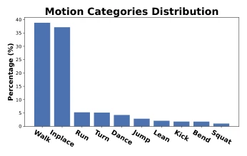
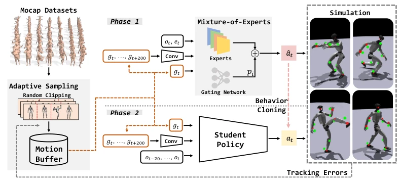
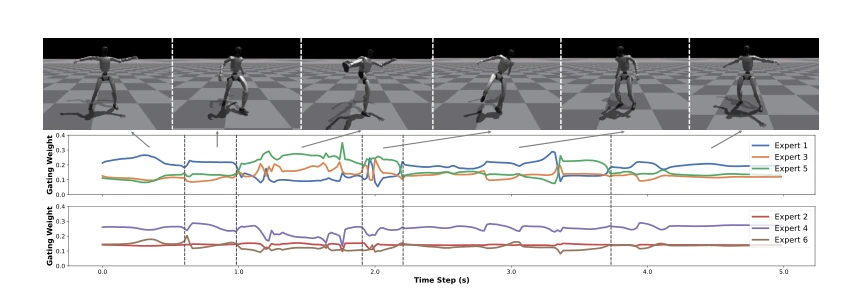
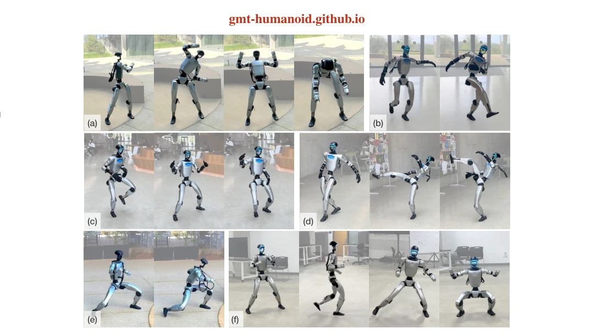
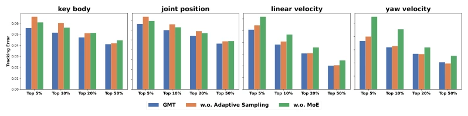
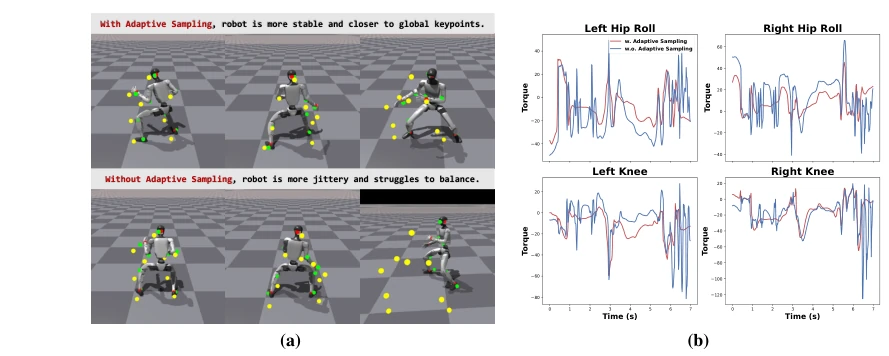

This paper attempts to achieve whole-body motion control for humanoid robots using a single policy, which sounds appealing, after all, who would not want one model to cover all actions? GMT indeed succeeded in reproducing kicking, dancing, and even kung fu on the Unitree G1, with performance superior to baselines such as ExBody2. However, do not get too excited; essentially, it remains imitation learning (Motion Imitation), far from a true "general-purpose robot". The paper itself is quite honest, admitting it cannot handle complex terrains and contact-rich skills (such as getting up from the ground). The so-called "general-purpose" refers more to the breadth of the action library rather than the depth of task planning. For colleagues pursuing SOTA, this combination of Adaptive Sampling + MoE is worth referencing, but do not expect it to directly solve all embodied intelligence challenges.
For humanoid robots to be as flexible as humans, relying solely on traditional control is too burdensome, and imitation learning is the trend. However, existing work has obvious pain points: the real world cannot acquire global states, leading to partial observability challenges [7, 8]; hardware limitations make actions like backflips in mocap data unexecutable [6]; datasets such as AMASS have extremely imbalanced distributions, causing model bias [6]; simple MLPs struggle to capture complex temporal dependencies [9]. Although HumanPlus [9] and OmniH2O [8] achieved whole-body imitation, lower-body actions are unnatural or rely on multiple policies [7]. GMT aims to address issues of uneven data distribution and insufficient model expressiveness, training a single policy to cover more skills.

Figure 2: Distribution of motion categories in the AMASS dataset. The figure shows the proportion of the total motion duration corresponding to each category.
GMT adopts a two-stage Teacher-Student framework. The Teacher is trained using PPO, while the Student imitates using DAgger. There are three core innovations: first, Adaptive Sampling, which addresses the low sampling rate of hard samples in long sequences by using random cropping and probability sampling based on tracking error, forcing the model to focus on difficult actions; second, Motion MoE, which introduces a gating network to dynamically combine multiple expert networks, allowing different experts to handle different motion manifold regions, thereby improving expressiveness; third, data and input optimization, which cleans AMASS/LAFAN1 data, removes unexecutable actions, and employs a convolutional encoder to compress future multi-frame information, enhancing temporal perception. Additionally, the input design includes local keypoint positions rather than global ones, combined with future frame stacking, enabling the policy to capture long-term trends and immediate goals.

Figure 3: An overview of GMT. Here gt denotes the motion target frame, ot denotes proprioceptive observation, and et denotes privileged information.

Figure 4: Plot of the output of gating network with respect to time on a motion clip composed of a sequence of skills.
In simulation, training is based on filtered AMASS+LAFAN1, evaluated on AMASS-test and LAFAN1. Metrics include keypoint position error, joint error, and velocity error. GMT outperforms ExBody2 [7] on all metrics. Ablation studies show that after removing MoE or Adaptive Sampling, errors in complex actions increase significantly. Real-world deployment on the Unitree G1 successfully reproduced skills such as high knee lifts, kicking a soccer ball, and dancing. Additionally, it can track actions generated by MDM, demonstrating generalization potential.

Figure 1: We deploy the general unified motion tracking policy on a medium-sized humanoid robot. GMT can perform a wide range of motion skills with good stability and generalizability, including (a) stretching, (b) kicking-ball, (c) dancing, (d) high kicking, (e) kungfu, and (f) other dynamic skills such as boxing, running, side stepping, and squatting.

Figure 5: Top percentile tracking errors on the whole AMASS dataset.

Figure 6: The performance of policies with and without Adaptive Sampling on one segment ex- tracted from a long motion clip. (a) Visualization of policy performance in the simulator. (b) Torque outputs of several joints corresponding to this segment.